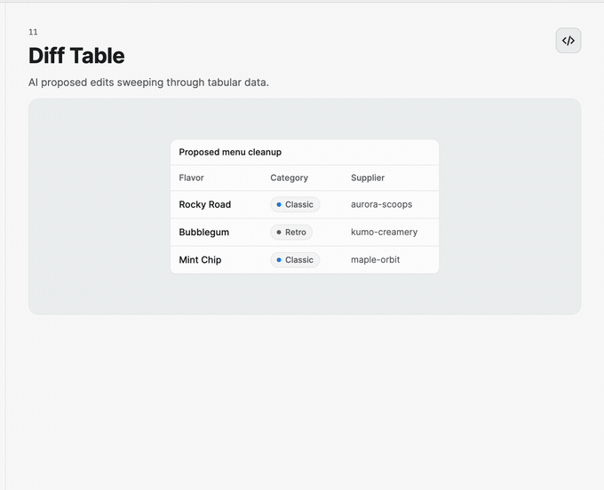
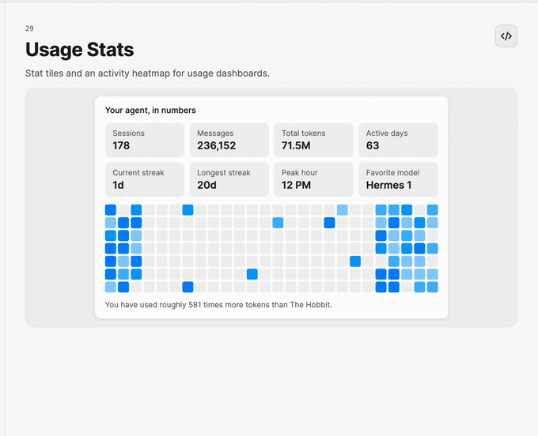

Data and Insights
These controls turn structured model output into reviewable application UI instead of a block of prose.
Review structured changes
<StackPanel Spacing="12">
<nova:DiffTable Header="Proposed changes"
ItemsSource="{Binding Changes}" />
<nova:RecordsTable ItemsSource="{Binding Records}" />
<nova:FilterTable ItemsSource="{Binding FilteredWork}"
SelectedStatus="{Binding SelectedStatus}" />
</StackPanel>
DiffTableRow classifies old and new values with DiffKind. CompanyRecord supports selection, tags, and relationship metadata. FilterTableItem and FilterTableStatus provide live status filtering; observable sources update the view while attached.
FilterTable.FilteredItems exposes the matching rows in source order. The built-in list virtualizes this projection, removing excluded rows immediately so sparse filters remain efficient on large sources. Chip counts still reflect the full source, and status changes update matching rows incrementally.

Search and navigation
<Grid ColumnDefinitions="240,*">
<nova:SidebarNav ItemsSource="{Binding Sections}"
SearchText="{Binding NavigationFilter}"
ItemSelectedCommand="{Binding NavigateCommand}" />
<nova:SearchPanel Grid.Column="1"
ItemsSource="{Binding SearchCorpus}"
SearchText="{Binding Query}"
ItemSelectedCommand="{Binding OpenResultCommand}" />
</Grid>
SearchPanel exposes FilteredItems and IsEmpty, limits results with MaxResultCount, and provides event or command activation. SidebarNav groups SidebarNavItem objects into sections and includes workspace and new-item actions.
Show generated insights
<StackPanel Spacing="12">
<nova:InsightCards Header="Highlights"
ItemsSource="{Binding Insights}" />
<UniformGrid Columns="2">
<nova:StatTile Label="Sessions" Value="178" />
<nova:StatTile Label="Tokens" Value="71.5M" />
</UniformGrid>
<nova:ActivityHeatmap Values="{Binding DailyUsage}"
AccessibleName="Daily agent activity" />
</StackPanel>
InsightCards pages through Insight objects and their statistics and trend series. ActivityHeatmap uses a date-aligned values source, configurable cell sizing, and an accessible summary format.
